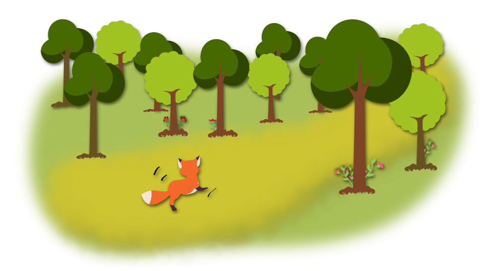
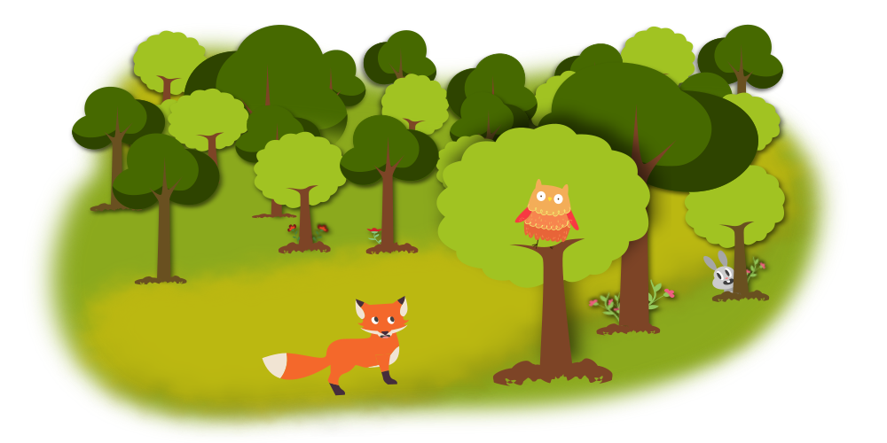
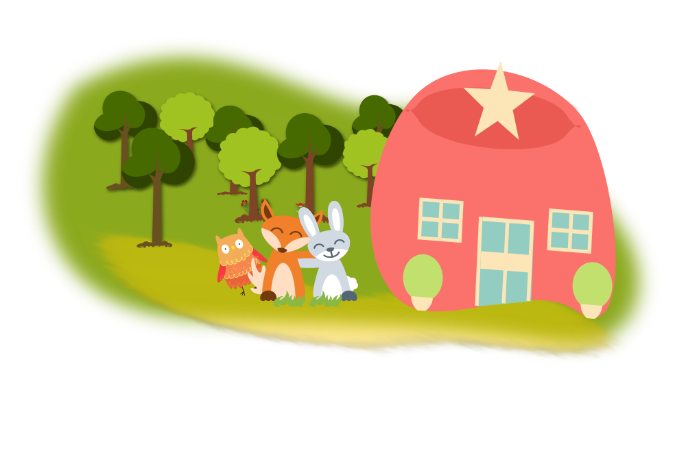

Lorem é uma raposa domesticada, mas nem sempre foi assim. Quando filhote, Lorem foi encontrada muito doente por um guarda de uma região florestal protegida, chamado Robson.Ele a levou para casa e cuidou dela como se fosse um mascote. Passado algum tempo Lorem estava muito feliz e saudável, mas Robson não deixava ela voltar a floresta. Lorem teimosa que só ela, um dia saiu correndo em direção a floresta.
Conforme Lorem entrava na floresta, mais se sentia livre. Corria, corria, corria... Correu tanto que ao se dar conta, percebeu que estava perdida. A pobre raposa se sentiu triste e assustada. E agora? Estava aflita, pois não sabia mais viver na floresta! Pensou, pensou, até que a raposa astuta avistou uma coruja e perguntou:
- Dona Coruja, como faço para achar o caminho de casa?
Dona Coruja chamou o sábio coelho da floresta, que tudo sabia, tudo conhecia.

A raposa encontrou o coelho sábio florestal que a levou de volta ao lar. Daquele dia em diante, Lorem, coelho e coruja se tornaram grandes amigos. Com a autorização do guarda da floresta, iam passear juntos todos os dias!
